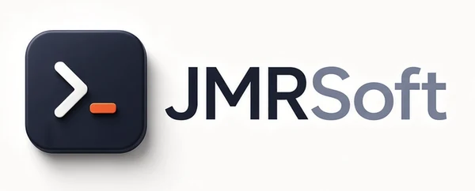

1. Responsable y compromiso de privacidad

TicTac Grapher está desarrollada por JMRSoft.
La aplicación está diseñada según el principio de privacidad desde el diseño. No recopilamos, no almacenamos en servidores ni transferimos a terceros ningún dato personal ni de uso de la aplicación. No hace falta crear una cuenta ni facilitar ningún dato para usar todas sus funciones.
2. Micrófono y audio
La función principal de la app es escuchar el tictac de un reloj mecánico. Para ello utiliza el micrófono del teléfono, solo mientras el usuario está midiendo (después de pulsar Medir):
- El sonido se analiza en tiempo real, en la memoria del propio teléfono, para calcular la marcha, la amplitud y el error de latido.
- El audio no se graba, no se guarda y no se envía a ningún sitio. Al detener la medición se descarta.
- La única excepción es la función opcional Grabar 20 s de audio: solo si el usuario la pulsa, se guarda un archivo WAV en la carpeta
Descargas/TicTacdel propio teléfono, y solo se comparte si el usuario elige hacerlo desde el menú de compartir de Android.
3. Datos guardados en el teléfono
La app guarda en el almacenamiento privado del dispositivo, sin enviarlos a ningún servidor:
- Ajustes: idioma, ángulo de levantamiento, frecuencia, filtro, ventana de promedio y demás opciones.
- Mediciones guardadas por posición (marcha, amplitud, error de latido) y el nombre del reloj que el usuario escriba opcionalmente.
Estos datos se eliminan al desinstalar la aplicación. Si el usuario tiene activada la copia de seguridad de Android en su cuenta de Google, el sistema puede incluirlos en esa copia cifrada, según las condiciones de la cuenta del usuario.
4. Informes PDF
Los informes de diagnóstico se generan en el propio teléfono. Al pulsar Compartir informe se guarda una copia en Descargas/TicTac y se abre el menú de compartir de Android: el informe solo se envía a la aplicación y al destinatario que el usuario elija (por ejemplo, WhatsApp o el correo). A partir de ese momento se aplica la política de privacidad de la aplicación elegida.
5. Permisos del dispositivo
- Micrófono (
RECORD_AUDIO): para escuchar el reloj durante la medición, como se describe en el punto 2. - Ajustes de audio (
MODIFY_AUDIO_SETTINGS): para configurar la captura de sonido sin procesados que alteren el tictac. - Vibración (
VIBRATE): para avisar al terminar una medición.
La aplicación no tiene permiso de acceso a Internet, por lo que no puede enviar datos a ningún servidor. Los enlaces al manual, a la página web y a esta política se abren en el navegador del teléfono.
6. Publicidad, analítica y terceros
- No contiene publicidad ni utiliza el ID de publicidad de Google.
- No incluye SDK de analítica ni de rastreo de terceros.
- No comparte ni vende información a terceros.
7. Menores
La aplicación no está dirigida a menores de 13 años y no recopila datos de ningún usuario, tampoco de menores.
8. Cambios
Si esta política cambia, se publicará aquí la nueva versión con su fecha de actualización.
1. Developer and privacy commitment
TicTac Grapher is developed by JMRSoft.
The app follows the privacy-by-design principle. We do not collect, store on servers or transfer to third parties any personal data or app usage data. You do not need to create an account or provide any information to use all of its features.
2. Microphone and audio
The app's main function is to listen to the ticking of a mechanical watch. To do so it uses the phone's microphone, only while the user is measuring (after tapping Measure):
- The sound is analysed in real time, in the phone's own memory, to calculate the rate, amplitude and beat error.
- The audio is not recorded, not stored and not sent anywhere. It is discarded when the measurement stops.
- The only exception is the optional Record 20 s of audio feature: only if the user taps it, a WAV file is saved in the phone's
Downloads/TicTacfolder, and it is only shared if the user chooses to do so from the Android share menu.
3. Data stored on the phone
The app stores the following in the device's private storage, without sending it to any server:
- Settings: language, lift angle, frequency, filter, averaging window and other options.
- Measurements saved by position (rate, amplitude, beat error) and the watch name the user may optionally type.
This data is deleted when the app is uninstalled. If the user has Android backup enabled in their Google account, the system may include it in that encrypted backup, under the terms of the user's account.
4. PDF reports
Diagnosis reports are generated on the phone itself. When the user taps Share report, a copy is saved in Downloads/TicTac and the Android share menu opens: the report is only sent to the app and recipient the user chooses (for example WhatsApp or email). From then on, the privacy policy of the chosen app applies.
5. Device permissions
- Microphone (
RECORD_AUDIO): to listen to the watch during the measurement, as described in section 2. - Audio settings (
MODIFY_AUDIO_SETTINGS): to configure sound capture without processing that would alter the ticking. - Vibration (
VIBRATE): to signal the end of a measurement.
The app has no Internet access permission, so it cannot send data to any server. Links to the manual, the website and this policy open in the phone's browser.
6. Advertising, analytics and third parties
- No advertising, and the Google advertising ID is not used.
- No third-party analytics or tracking SDKs.
- No information is shared with or sold to third parties.
7. Children
The app is not directed at children under 13 and does not collect data from any user, children included.
8. Changes
If this policy changes, the new version will be published here with its update date.